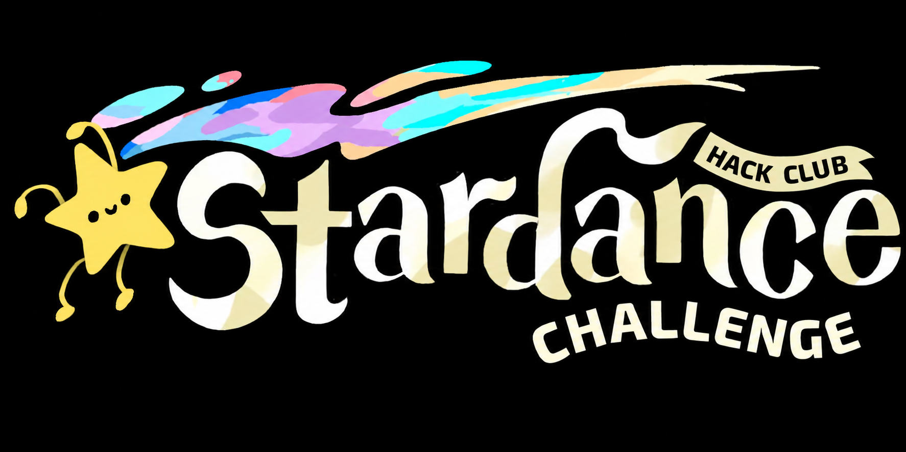

00:00
Turn on yo internet lil vro -_-
made for

AI tools
ChatGPT
Claude
Gemini
DeepSeek
Grok
Perplexity
loading today's pic...
—
—
fetching the cosmic details, hold up...
view full res ↗
Reset layout